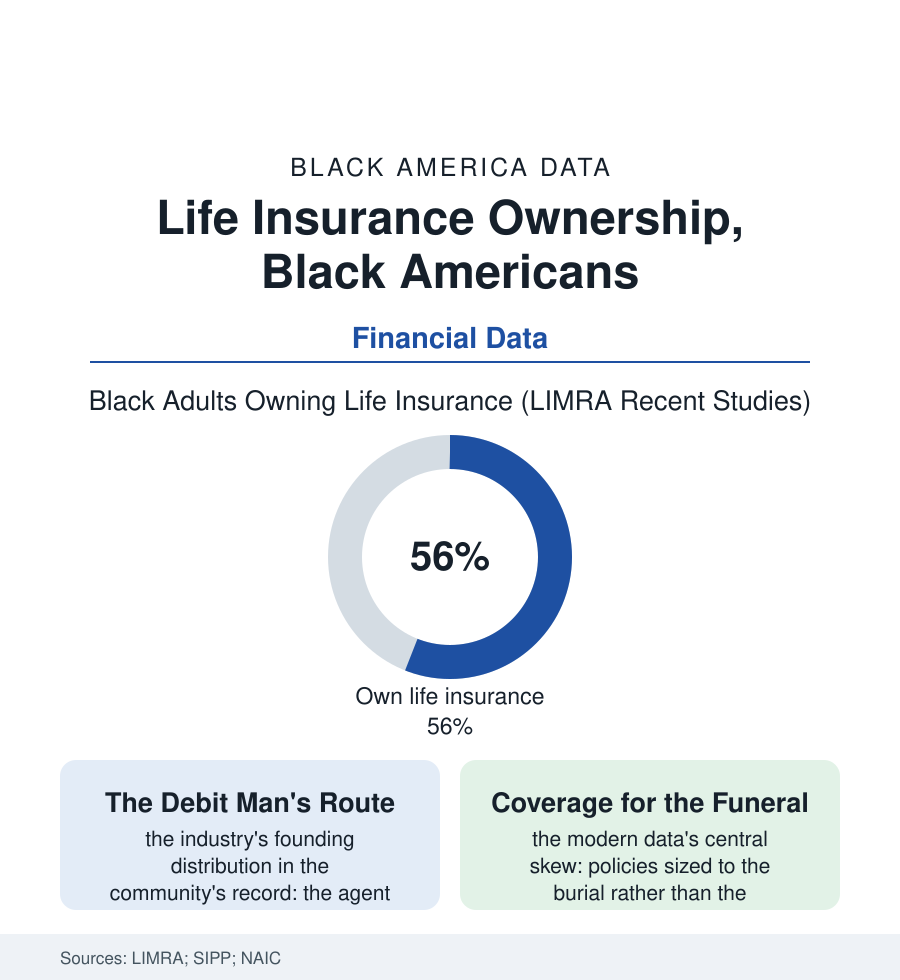

Black Census
The Policy in the Bible: Life Insurance in Black America
The burial policy tucked in the family Bible is this population's oldest financial instrument — and the industry's modern data show the coverage tradition holding, and straining. The insurance file.

In the oldest Black households of this atlas, the family's single most important financial document was not a deed or a passbook. It was the insurance policy — the burial policy, kept in the Bible or the strongbox, its premium a dime a week collected at the door — an instrument this population adopted earlier and more universally than almost any other the financial system offered. The modern industry data say the tradition held. This article reads the insurance file.
The Debit Era and Its Companies
The history runs on two rails the business records preserve: exclusion and enterprise. The great national carriers' actuarial tables priced Black lives as uninsurable classes in the industry's early decades — the race-based premium structures documented in the regulatory record into the twentieth century — and the community answered as it answered the bank file's exclusions: with its own companies, the Black insurers of the golden-age business shelf (Atlanta Life, North Carolina Mutual and their peers) building, substantially on the burial and industrial policy, the largest Black financial institutions of their era. The distribution system was the debit route: the agent with the collection book walking his district weekly, a figure of the neighborhood's economic furniture — the policy's small face value and weekly cadence fitted to the wage file's realities, the lapse rates and the cost ratios later audited, in the consumer era's reckoning, as the era's mixed ledger: expensive insurance, faithfully delivered, to people the industry's giants would not serve at any price. The cultural deposit outlasted the route: the conviction, transmitted in the family data like a gene, that the burial will be paid for — that no collection plate or crowdfunding link will carry the shame of the unready dead — the homegoing's economics underwritten before every other financial aspiration is entertained, a priority the modern need-gap studies keep rediscovering in their interviews as though it were news.
Covered for the Funeral, Short for the Family
The modern ownership numbers are, by the industry's own barometer, a Black strength: ownership rates at or above the national figure in the recent LIMRA series — the tradition's persistence measurable — and the file's problem is not ownership but architecture: the coverage amounts in the SIPP and industry data running a fraction of the need the same studies compute (the income-replacement multiples of the breadwinner's salary that constitute adequate coverage in the planner's arithmetic), the policy mix skewed to the small final-expense whole-life products — the debit era's descendants, now sold by television and mail at the senior file's kitchen tables, their price-per-thousand the consumer data's standing caution — against the term coverage whose economics the younger professional rows have begun, in the recent panels, to adopt at converging rates. The workplace channel writes the middle rows: the employer group policy as the only coverage of a large share of the workforce file — its portability cliff at the job change, its multiples capped at the salary's small integer — and the estate file adds the summit's rows (the insurance trust as the wealth-transfer instrument of the Black affluent, the second-to-die policies funding the heirs'-property tax bills of the land file). The industry's distribution future is the file's live chapter: the Black agent force — the debit man's licensed grandchildren, the independent agencies of the business file — against the direct-to-consumer platforms whose algorithms price without the kitchen-table conversation the community's buying tradition runs on. The need gap the LIMRA arithmetic publishes for Black households runs, in aggregate, to the hundreds of billions. Behind the aggregate stands the file's true figure: a people that insured its funerals when it could insure nothing else, now being asked — by its own agents first — to insure its incomes at the same fidelity.
Reading the Insurance Data
The insurance file is the census section's strongbox: the population's first financial instrument, bought at the door for a dime, kept in the Bible for a century. LIMRA publishes the rates. The policies in the strongboxes — face values rising, generation by generation, from the burial toward the mortgage — publish the trajectory, in the family's own hand.
More in Black Census
The Black Population of the United States: Size, Definitions, and Distribution
The Black population of the United States totals 52.8 million — 15.4 percent of the nation. How the Census Bureau defines and counts the population, and where it lives.
Black Median Household Income in the United States
Black median household income stands at $56,490 in the Census Bureau's annual income report — how the figure is measured, how it compares, and what drives it.
The Black Poverty Rate: Levels, Children, and the Long Trend
The official Black poverty rate is 17.1 percent — against 11.1 percent nationally and 7.7 percent for non-Hispanic White Americans. How poverty is measured and what the data show.
Source: LIMRA Insurance Barometer and ownership studies; U.S. Census Bureau Survey of Income and Program Participation; National Association of Insurance Commissioners; company historical records.